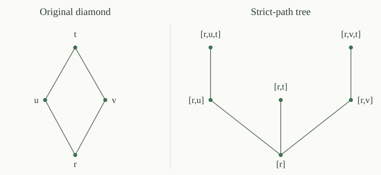

A finite rooted tree frame is a nonempty finite partially ordered set \((T,\preceq)\), with a specified least element \(o\), such that the predecessors of each point are linearly ordered:
Thus two histories cannot split and subsequently merge. Branches may split above the root. A diamond with \(r<u<t\) and \(r<v<t\), where \(u,v\) are incomparable, is a partial order but is not a tree: the predecessors \(u,v\) of \(t\) violate the displayed condition. We use the usual persistent valuations on tree frames.
Fix a finite partially ordered set \((W,\leq)\) and a world \(r\in W\). A strict rooted path from \(r\) is a nonempty finite list
Here \(x<y\) means \(x\leq y\) and \(x\ne y\). By transitivity it is equivalent to require strictness only for consecutive entries. Write \(T_r(W)\) for the set of these paths. It contains the one-point path \([r]\). Paths may skip intermediate worlds; they need not follow only immediate successors.
The last-world map is the specified function \(\ell:T_r(W)\to W\) defined by \(\ell([w_0,\ldots,w_k])=w_k\). Nonemptiness makes this well-defined, including \(\ell([r])=r\).
If \(W\) has \(n\) worlds, every \(p\in T_r(W)\) has at most \(n\) entries. Consequently \(T_r(W)\) is finite.
Two different positions in a strict path cannot have the same entry: the earlier entry is strictly below the later one. The positions therefore inject into \(W\), giving the length bound. For each length \(j\leq n\), there are only finitely many lists of length \(j\) over the finite set \(W\): these lists are functions from a fixed \(j\)-element set to \(W\). A finite union over \(1\leq j\leq n\) is still finite, and the strict rooted paths form a subset of that union. The bound concerns the number of entries; a path with \(k\) strict steps has \(k+1\) entries.
Define the prefix order on \(T_r(W)\) by \(p\preceq q\) when \(q=p\mathbin{\frown}s\) for some list \(s\). With this order and root \([r]\), \(T_r(W)\) is a finite rooted tree frame.
A list is its own prefix by using the empty suffix. Concatenating suffixes proves transitivity. If each of two lists is a prefix of the other, their lengths are equal; the suffixes are empty and the lists are equal. Thus prefix order is a partial order. Every path starts with \(r\), so \([r]\) is its prefix and is a least element.
Suppose \(p,q\) are both prefixes of \(s\). Compare their lengths, say \(p\) is no longer than \(q\). Their first \(\operatorname{length}(p)\) entries are the same initial entries of \(s\), so \(p\) is a prefix of \(q\). This proves the required comparison of predecessors. Finiteness is ; nonemptiness follows from \([r]\). These facts establish every part of the tree definition.
For every \(p,q\in T_r(W)\), \(p\preceq q\) implies \(\ell(p)\leq\ell(q)\). Also \(r\leq\ell(p)\) for every path \(p\).
If the suffix extending \(p\) to \(q\) is empty, their last worlds are equal. Otherwise the last entry of \(p\) occurs strictly earlier than the last entry of \(q\), so strictness gives \(\ell(p)<\ell(q)\), hence the asserted weak inequality. For the second claim, either \(p=[r]\), or its first entry \(r\) is strictly below its last entry. Thus the last-world map satisfies the forth condition.
For \(p\in T_r(W)\) and \(x\in W\) with \(\ell(p)\leq x\), there is a path \(q\succeq p\) with \(\ell(q)=x\). One specified choice is
The equality case already has the right endpoint. Otherwise \(\ell(p)<x\). Every earlier entry of \(p\) is strictly below \(\ell(p)\), so transitivity puts it strictly below \(x\) too. Appending \(x\) therefore retains all strict comparisons and the initial entry \(r\). The original path is a prefix, and the new last entry is exactly the requested \(x\). This is the back condition for the same last-world map; it lifts a future of the image of each supplied path.
The image of \(\ell:T_r(W)\to W\) is \(\{x\in W:r\leq x\}\). In particular, \(\ell\) is surjective onto \(W\) if and only if \(r\) is a least world.
Every endpoint lies above \(r\) by . Conversely, if \(r\leq x\), use the path \([r]\) when \(x=r\), and \([r,x]\) otherwise. In the second case \(r<x\), so this is a strict rooted path with endpoint \(x\). Hence precisely the worlds above \(r\) occur. This set is all of \(W\) exactly when \(r\leq x\) for every original world. Surjectivity on the whole frame is therefore a separate assertion from the back condition.
Let \(M\) be a persistent Kripke model on \(W\), with atom set \(P\). Its strict-path tree model at \(r\), denoted \(U_r(M)\), has frame \(T_r(W)\) and valuation
This is the actual pullback valuation along \(\ell\). It is persistent because \(p\preceq q\) implies \(\ell(p)\leq\ell(q)\), after which persistence in \(M\) applies. The one-point path supplies a world, so the resulting model is nonempty.
For the specified finite partial-order model \(M\), world \(r\), and tree model \(U_r(M)\), the actual function \(\ell:U_r(M)\to M\) is a bounded morphism. For every shared propositional formula \(A\) and path \(p\),
Atom agreement is the definition of the pullback valuation. Forth is , and back is the specified extension in . Apply the bounded-morphism preservation theorem to these three facts. It covers every constructor, including implication and native negation, because their target futures can be lifted by back.
At the root, \(\ell([r])=r\). Therefore for every formula set \(\Gamma\), including an infinite one, \((U_r(M),[r])\) forces every member of \(\Gamma\) and fails \(A\) exactly when \((M,r)\) does. This transports a supplied countermodel; it makes no assertion that arbitrary-premise nonderivability has a finite countermodel.
For any finite partially ordered model \(M\) and world \(r\), its generated model \(M_{\geq r}\) is finite and has a least world. Its strict-path tree model has a surjective bounded morphism onto \(M_{\geq r}\).
The generated world's underlying set is the subset \(\{x:r\leq x\}\) of the finite set \(W\), with the induced partial order. Its least world is \(r\). Apply and to this precise model. The resulting last-world function is surjective onto the generated model, and composing with its bounded inclusion maps each path to its original endpoint in \(M\). The composition need not be onto all of \(M\), since worlds unrelated to \(r\) have been omitted.
Let \(\Gamma\) be a finite set of numbered-atom formulas. If \(\Gamma\nvdash_{\mathrm I}A\), there is a model on a finite rooted tree whose root forces every formula in \(\Gamma\) and fails \(A\).
The finite-poset countermodel theorem gives an actual nonempty finite partially ordered model \(M\) and a designated world \(r\) retaining \(\Gamma\) and failing \(A\). Restrict to \(M_{\geq r}\); the generated-model equivalence retains the same counterexample at its least world. Form its strict-path model. Its frame is a finite rooted tree by and . At its root the forcing equivalence in retains all the premises and the failed conclusion.
Consequently \(\Gamma\vdash_{\mathrm I}A\) is equivalent to preservation from \(\Gamma\) to \(A\) at the root of every finite rooted tree model. The forward direction is soundness; if derivability fails, the constructed tree refutes the root-preservation condition. Finiteness of \(\Gamma\) enters through the finite-poset theorem, whereas transporting a given model in did not require it.
Take the four-world diamond with strict comparisons \(r<u<t\) and \(r<v<t\), and no comparison between \(u,v\). Its strict paths from \(r\) are exactly
In particular, the paths \([r,u,t]\) and \([r,v,t]\) are incomparable, although their last worlds are equal. There is also the direct path \([r,t]\), since strict paths may skip intermediate worlds.

A path starts at \(r\). If it has another entry, that entry is \(u\), \(v\), or \(t\). The path ending immediately there is allowed. After \(u\) or \(v\), the only possible next entry is \(t\), and no entry can follow \(t\). This enumerates the six lists. The two three-entry lists differ in their second entries, so neither is a prefix of the other.
If a chosen atom is true precisely at \(t\) in the original diamond, it is true precisely at the three paths ending at \(t\) in the tree model, by the pullback rule. Thus the tree has six worlds although the original has four, and the copies retain the same atom information and the same full formula forcing at their endpoints.
This same six-path example shows that unraveling need not preserve directed future cones: the two displayed terminal paths have no common upper bound. Thus truth transfer for the pulled-back valuation does not establish validity of weak excluded middle for every valuation on the tree frame.
Would nondecreasing lists, allowing \(w_i=w_{i+1}\), still give a finite path set for every finite frame?
No. Even on the one-world frame \(\{r\}\), all lists
are nondecreasing and have different lengths, hence are different lists. They give an injection from the positive integers into the proposed path set, so that set is infinite. Strictness removes those repetitions and makes the injection of path positions into the original finite world set possible.
Let \(C=\{a,b\}\), with \(a\ne b\), and declare every world accessible from every world. Is there a bounded frame map from any nonempty finite partially ordered frame to \(C\)?
No. Every nonempty finite partial order has a maximal point \(m\): start at any point and move strictly upward whenever it is not maximal; distinct moves cannot continue beyond the finite number of points. If \(f\) were a bounded map, choose the world \(c\in C\) different from \(f(m)\). The universal accessibility relation gives \(f(m)\leq c\). Back then supplies \(v\geq m\) with \(f(v)=c\).
Maximality makes \(v=m\), contradicting \(c\ne f(m)\). Thus there is no such bounded map, even without requiring it to be surjective. Distinct mutually accessible worlds therefore obstruct this proposed finite-tree representation. The finite-poset countermodel theorem already supplies partial orders, so the tree-countermodel argument does not need to treat this preorder as a tree image.